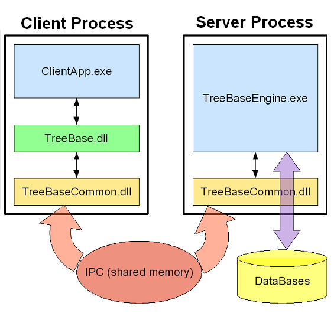

The TreeBaseEngine.exe creates a server process that can be running as an OS service (now inly Windows) or directly from command line (in practice only for testing). It contains a linked and loaded DLL TreeBaseCommon.dll that is responsible for communication.
Each client process has loaded both DLLs; TreeBase.dll (that implements the API) and TreeBaseCommon.dll.
For each client thread, that uses API functions a conjugated thread in server space is created.
On current implementation only shared memory is used to communicate between server and clients. But the design of TreeBaseCommon.dll allows to introduce in future mechanisms to communicate via network (named pipes, sockets).
